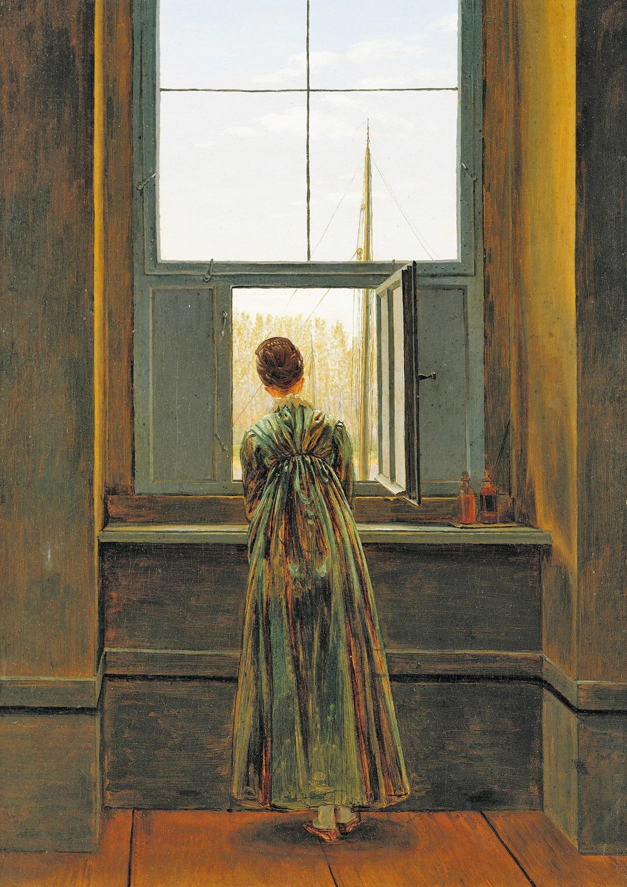
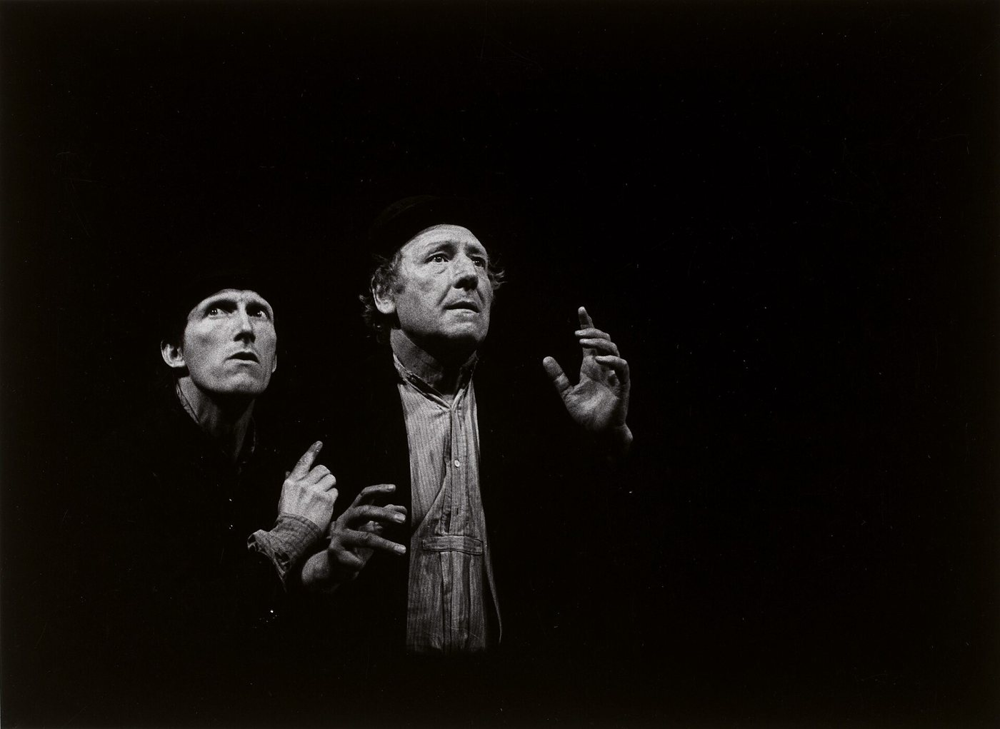

기다림은 정말 시간을 낭비하는 걸까
우리는 참 많은 것을 기다리며 살아갑니다.
한 통의 연락을 기다리고, 누군가의 마음을 기다리고, 일이 풀리기를 기다리고, 기도한 것이 이루어지기를 기다립니다.
그런데 기다림이 길어지면 이런 생각이 듭니다.
“나는 지금 살고 있는 걸까, 아니면 삶이 시작되기를 기다리고 있는 걸까?”
요즘은 특히 그렇습니다.
우리는 시간을 효율로 생각하는 데 익숙합니다.
더 빨리 이동하고, 더 빨리 답하고, 더 빨리 결과를 내는 것이 좋은 것으로 여겨집니다. 무엇이든 빨리 도착하는 세상에서 기다림은 쉽게 ‘낭비’처럼 느껴집니다.
하지만 인간의 삶에는 빨리 감을 수 없는 것들이 있습니다.
사람의 마음이 변하는 시간, 관계가 깊어지는 시간, 상처가 아물어 가는 시간, 한 사람이 성숙하는 시간.
그리고 아무리 애써도 내가 앞당길 수 없는 어떤 응답의 시간도 있습니다.
기다림은 바로 그곳에서 시작됩니다.
창가에 서 있는 사람
카스파르 다비트 프리드리히의 「창가의 여인」에는 한 여성이 등을 보인 채 창밖을 바라보고 있습니다.
우리는 그녀의 얼굴을 볼 수 없습니다. 무엇을 기다리는지도 알 수 없습니다.
누군가를 기다리는 것인지, 떠나고 싶은 것인지, 그저 바깥 풍경을 바라보고 있는 것인지도 확정할 수 없습니다.

그런데 오히려 그 점 때문에 이 그림은 오래 남습니다.
그녀는 ‘여기’에 서 있지만, 시선은 ‘저기’를 향하고 있습니다.
기다림도 어쩌면 비슷합니다.
몸은 오늘에 있는데 마음은 자꾸 내일을 향합니다.
“이 일이 끝나면.”
“그 사람이 돌아오면.”
“내가 원하는 곳에 도착하면.”
“기도가 응답되면.”
우리는 자꾸 미래를 바라봅니다.
문제는 미래를 바라보는 것 자체가 아닙니다.
문제는 그 미래 때문에 지금 서 있는 자리를 삶으로 인정하지 못하게 되는 순간입니다.
고도가 오지 않는 오늘
사무엘 베케트의 『고도를 기다리며』에는 고도를 기다리는 두 사람이 등장합니다.
하지만 고도는 오지 않습니다.
오늘 오지 않으면 내일을 기다립니다.
내일이 되어도 다시 기다립니다.
이 작품이 불편한 이유는 단순합니다.
그들이 기다리는 동안에도 시간은 계속 흐르기 때문입니다.

우리도 비슷한 말을 자주 합니다.
“취업하면 제대로 살아야지.”
“결혼하면 달라지겠지.”
“이 문제가 해결되면 편해지겠지.”
“기도가 응답되면 그때 시작해야지.”
그런데 기다림이 길어지면 어느 순간 질문이 생깁니다.
혹시 나는 기다린다는 이유로 삶 자체를 미루고 있는 건 아닐까.
여기서 중요한 점이 하나 있습니다.
『고도를 기다리며』를 기독교적인 작품이라고 단정하거나, 고도를 곧바로 하나님이라고 보는 것은 조심해야 합니다.
작품은 오히려 기다림의 의미와 대상을 끝까지 불확실하게 남겨둡니다.
그런데 바로 그 차이 때문에 성경의 기다림은 더 선명하게 보입니다.
성경의 기다림은 멈춤이 아니었다
성경에는 기다리는 사람들이 많이 등장합니다.
아브라함과 사라는 약속을 기다렸고, 이스라엘은 해방과 귀환을 기다렸습니다. 시편의 사람들은 하나님의 응답을 기다렸고, 신약의 공동체는 아직 완성되지 않은 하나님 나라를 기다렸습니다.
하지만 성경에서 기다림은 대체로 아무것도 하지 않는 시간이 아닙니다.
시편에는 이런 질문도 반복해서 나옵니다.
“어느 때까지입니까.”
기다리는 사람은 힘들지 않은 척하지 않습니다.
오래 걸린다는 사실도, 지쳤다는 사실도 하나님께 말합니다.
그러면서도 기다림은 현실 도피가 되지 않습니다.
성경의 기다림은 아직 오지 않은 것을 바라보면서도, 오늘의 삶을 포기하지 않는 태도에 가깝습니다.
바로 이 지점에서 『고도를 기다리며』와 성경은 잠시 가까워졌다가 다시 멀어집니다.
둘 다 인간이 ‘아직 오지 않은 것’을 바라보는 존재라는 사실을 보여줍니다.
하지만 베케트의 세계에서는 기다림의 대상과 의미가 흔들립니다. 반면 성경의 기다림은 하나님의 신실하심이라는 약속을 전제로 합니다.
둘은 닮았지만 같지 않습니다.
기다림은 통제할 수 없다는 사실을 배우는 시간
우리가 기다림을 힘들어하는 이유는 단순히 시간이 아까워서만은 아닐지도 모릅니다.
기다림은 내가 모든 것을 통제할 수 없다는 사실을 보여주기 때문입니다.
씨앗을 심을 수는 있지만, 억지로 자라게 할 수는 없습니다.
누군가를 사랑할 수는 있지만, 그 사람의 마음을 명령할 수는 없습니다.
최선을 다할 수는 있지만, 결과를 강요할 수는 없습니다.
기도할 수는 있지만, 하나님께 내 시간표를 강요할 수는 없습니다.
그래서 기다림은 인간의 한계를 드러냅니다.
그런데 역설적으로, 바로 여기서 기다림은 수동성과 달라집니다.
기다린다는 것은 아무것도 하지 않는 일이 아니라,
내가 할 수 있는 것과 할 수 없는 것을 구별하는 일일 수도 있습니다.
오늘 해야 할 일을 하면서도 결과를 붙잡지 않는 것.
사랑하면서도 상대를 조종하지 않는 것.
씨앗을 심고 물을 주면서도, 자라나는 순간까지 내가 만들어내려 하지 않는 것.
이런 기다림은 꽤 능동적입니다.
기다리는 오늘도 내 삶이다
다시 프리드리히의 그림으로 돌아가 봅니다.
창밖에는 아직 닿지 않은 세계가 있습니다.
하지만 그녀가 서 있는 방 역시 하나의 세계입니다.
우리도 자꾸 미래의 어느 지점에 삶의 시작점을 찍습니다.
문제가 해결되면.
원하는 곳에 도착하면.
기도가 응답되면.
내가 충분히 괜찮은 사람이 되면.
하지만 그날을 기다리는 오늘도 내 인생에서 빠져나가지 않습니다.
어쩌면 기다림은 삶의 빈칸이 아닐지도 모릅니다.
기다림은 내가 원하는 것을 얻기 전까지 견뎌야 하는 공백이 아니라,
내가 시간을 소유한 사람이 아니라 시간을 받아 살아가는 사람이라는 사실을 배우는 자리일 수 있습니다.
그래서 기다림 앞에서 가장 중요한 질문은 꼭 이것만은 아닙니다.
“언제 올까?”
오히려 이 질문이 더 오래 남습니다.
아직 내가 기다리는 것이 오지 않은 오늘을, 나는 여전히 삶이라고 받아들이고 있을까?